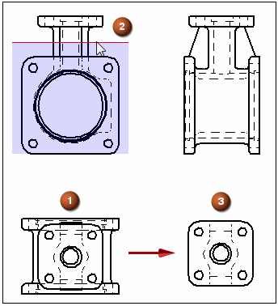

Remove drawing view geometry with a clipping plane
Use the Set Drawing View Depth command to define a back clipping plane to remove geometry from a drawing view (1). You can define the plane in a view that is folded 90 degrees from it by clicking a keypoint or a centerline (2). The geometry is removed when you update the view (3).

-
Right-click the drawing view from which you want to remove geometry and choose Set Drawing View Depth.
-
Set the depth of the back clipping plane using one of the following methods.
To specify this type of display depth
Do the following
Associative display depth
-
Position the cursor over a drawing view that is orthogonal to the view you are modifying.
Move the cursor across the geometry, and observe the red depth plane line with a shaded rectangle attached to it.
-
The depth plane line represents the back clipping plane. The shaded area represents the depth to be removed from the drawing view.
-
To see the distance value corresponding to the display depth to be kept, look at the Depth box on the command bar.
Tip:To control the increments by which the distance increases or decreases as you move the cursor, enter a value in the Step box on the command bar.
-
-
Click a keypoint (such as a center point, end point, or midpoint) to define the drawing view display depth.
Non-associative display depth
-
In the Depth box on the command bar, type a value to specify the location of the visible display depth distance (the amount you want to keep). Press Enter.
-
Click to finish the command.
Note:The visible display depth is measured from the top plane of the model in the selected drawing view to the location where you want the back clipping plane to be placed.
Note:If you selected a pictorial drawing view in Step 1, the dynamic depth plane line described above is not available to you. Instead, type a value as described below.
-
-
To see the results, right-click the drawing view you selected in Step 1 and choose Update.
-
There are other ways to specify the depth value.
-
You can locate a keypoint or centerline to define the depth, yet make the depth plane non-associative. To do this, press Shift when you click the keypoint or centerline.
-
If the model contains holes, you can use the Automatic Centerlines command to extract the centerline annotations into the drawing view. If there is a centerline parallel to the depth plane line, then you can define an associative depth value by clicking it.
-
You can click a free-space point in the drawing view to specify a non-associative display depth.
-
-
To adjust the drawing view depth, select the Set Drawing View Depth command again. For more information, see Modify the drawing view display depth.
-
For detail views, you can:
-
Apply clipping planes at different depths directly to an independent detail view.
-
Apply a back clipping plane to a dependent detail view by first setting the display depth on its source view, and then updating both views.
-